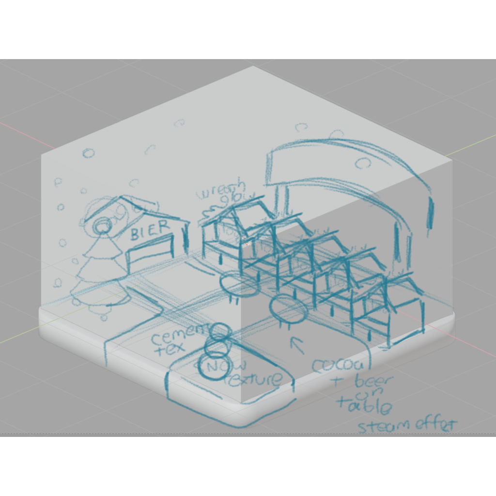

Blender Christmas Market Scene
2025-12-14
I visited Chicago's Christkindlmarket recently, which is really close to where I live. It gets too crowded, but on a weekday just after work it wasn't so bad. I didn't take any photos or buy much, but the warm glow of the vendor stalls against the cool, snowy pavement made me really want to get back into Blender and do a little scene, which you can see above.
It's probably the most complicated Blender project I've ever done, but I didn't track how long it took me. It's the first time I've touched Blender in a really long time, but I remembered how to do most everything I needed to. I think I sort of worked smarter than usual for me, here. I sketched it out first, imported the sketch into Blender, and "blocked" everything out using basic shapes. Then, I played around with the lighting, since the "glow" was sort of important to me.

I was going for a sort of "cozy diorama" look that you see artists sharing so much of on social media. I also was thinking about the sort of pre-rendered backgrounds you would see a lot of in PSX-era games like the original Final Fantasy VII. The textures are all from AmbientCG, and I used some Google "germanic" font for the signs. As for modeling the objects, I did that all myself, with the exception of the tree I guess, for which I used some sort of Blender plugin or extension that lets you generate trees based on specifications that you input.
I got to do a lot of things for the first time in this project. Geometry nodes have been around forever, but they were kind of new the last time I spent much time in Blender, believe it or not. I got to use them quite a bit in this, especially for the falling snow. I followed some tutorial for that, but it wasn't exactly what I wanted, so I had to make plenty of changes, which was great practice. I also had never really played around with what you can do with curves before. I used them to make the lights wrap around the Welcome sign, and for some other purpose I can't remember now.
I'm very happy with how this turned out, it basically came out exactly how I was picturing it. Here's a little progress video I made as well so it can be seen step-by-step.